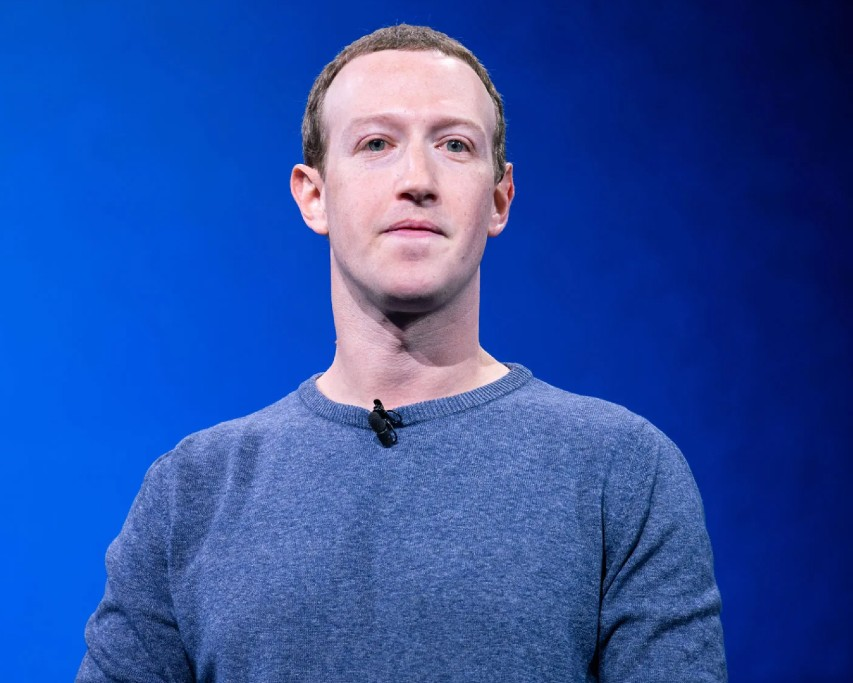
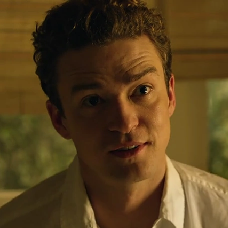
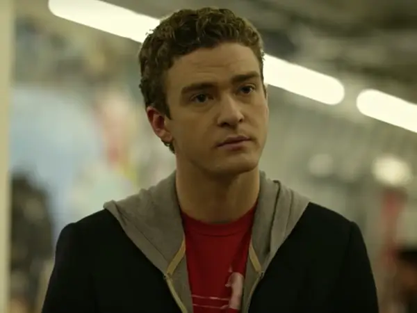

Trailer
Aqui se encontra o código de imcorporação para visualizar o trailer do filme!
Elenco - Atores principais

Mark Zuckerberg
Gênio da programação, socialmente reservado, determinado a transformar o Facebook em um império.

Eduador Savarin
Cofundador e primeiro investidor do Facebook, traído por Zuckerberg.

Sean Parker
Carismático e ousado, influencia Zuckerberg a expandir o Facebook globalmente.
Cameron e Tyler Winklevoss
Irmãos gêmeos atletas que acusam Zuckerberg de roubar sua ideia de rede social.

Dustin Moskovitz
Amigo de Mark, discreto e técnico, ajuda na expansão inicial do Facebook.